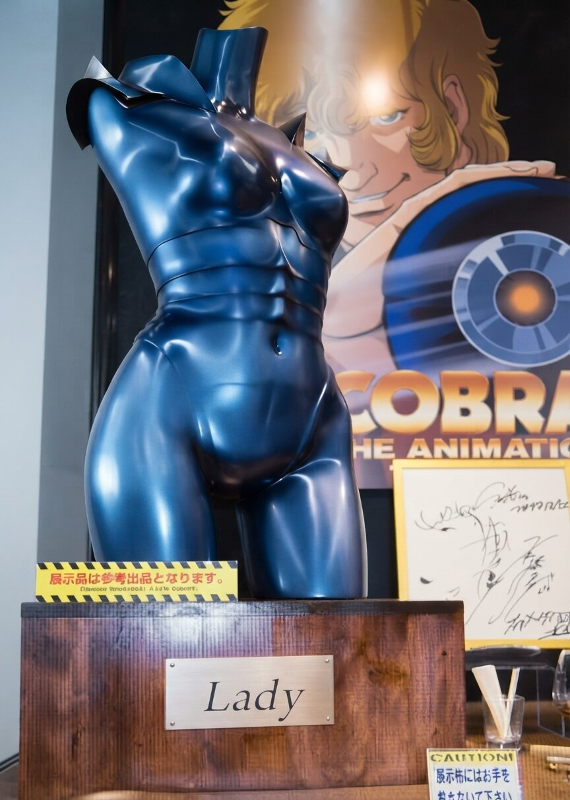
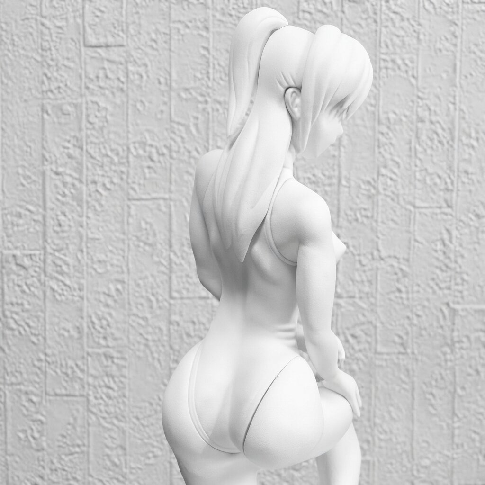
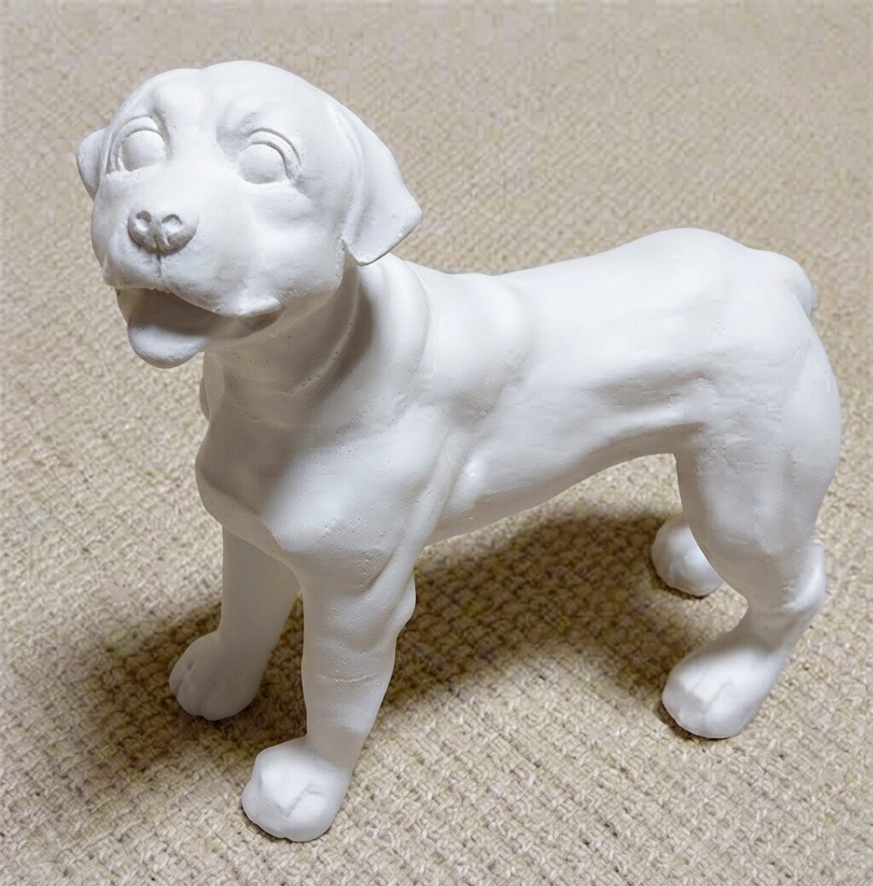
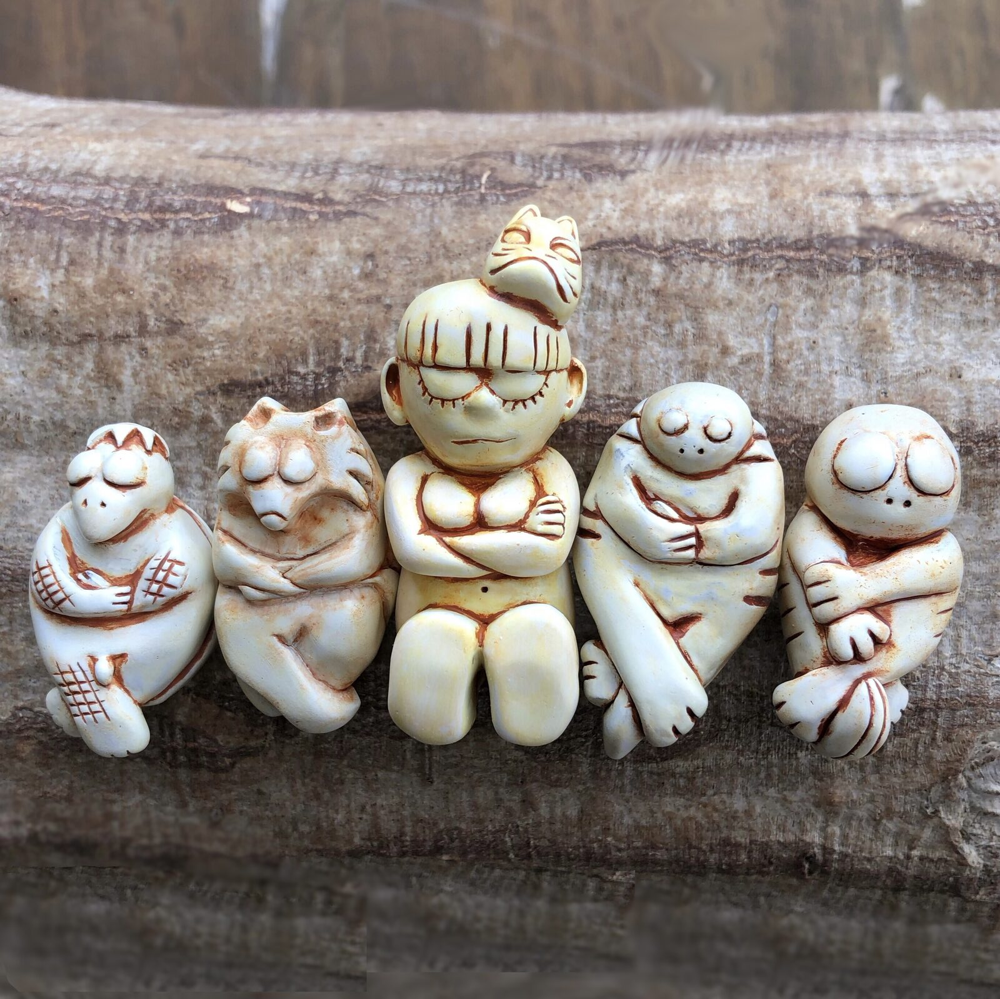

Lady(マネキン改造)
アニメ「COBRA THE ANIMATION」展示会にて参考出品。プロとして携わった仕事の一つ。
5F ― ANALOG MODELING
SCULPTED BY HAND
粘土やレジンと向き合い、知識と経験、そして指先の感覚を頼りに、キャラクターや生き物に命を吹き込む仕事です。玩具・カタログ制作など、企業案件としての原型制作の経験もあります。デジタルに軸足を移した今も、この経験が、すべての造形判断の土台になっています。

Lady(マネキン改造)
アニメ「COBRA THE ANIMATION」展示会にて参考出品。プロとして携わった仕事の一つ。

ガレージキット原型(制作途中)

犬の彫像
粘土会社のカタログ掲載用に依頼・制作。動物の量感・骨格表現にも対応します。

九尾が化けた女性と森の生き物たち
化身した女性を囲むように並ぶ、森の生き物たち。
このジャンルのお問い合わせ・お仕事依頼は、件名にジャンルを記入の上、ここからお願いします。
お問い合わせする